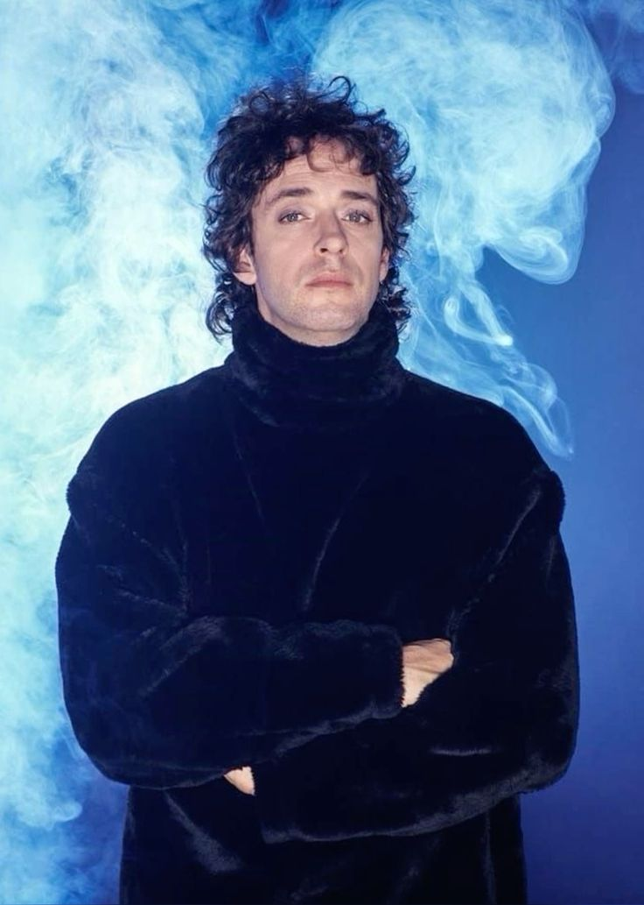

Gustavo Adrián Cerati (Nacio en Buenos Aires, 11 de agosto de 1959-Buenos Aires y murio el 4 de septiembre de 2014 a los 55 años) fue un músico, cantautor, multinstrumentista y
productor discográfico argentino que obtuvo reconocimiento por haber sido el líder, vocalista, compositor y guitarrista
de la banda de rock Soda Stereo.
Otros músicos lo consideran como uno de los artistas más influyentes del rock latinoamericano.